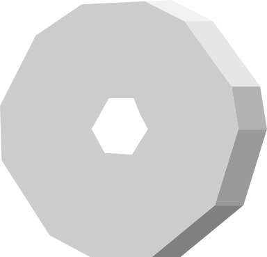

Stonedesigns
Velkommen til min portfølje
Her vil du kunne se mine tidligere projekter, hører nogle korte ting om mig. Desuden vil du have mulighed for at kontakte mig
Teknologier jeg anvender:
Det gælder om at finde det rigtige værktøj til opgaven. Selvom et værktøj godt kan udfører flere opgaver, er nogle mere fordelagtige at bruge til nogle opgaver. Derfor er jeg altid klar på at lærer nye teknologier og udforske deres mulighed.
Dette er min nuværende værktøjs kasse:


Projekter:
Her nogle af mine tidligere projekter, det er både bestående af "rigtige" projekter og skole projekter.


Daniel:
Født og opvokset i det vestjydske for små 26 år siden
Stats: 3 søskende, ca 10 gode makkere, 3 fritids interesser.
Tidligere stillinger: Handicaphjælper, Hjælpelærer
Uddanelse: Gymnasial, Webudvikler, Software udvikler